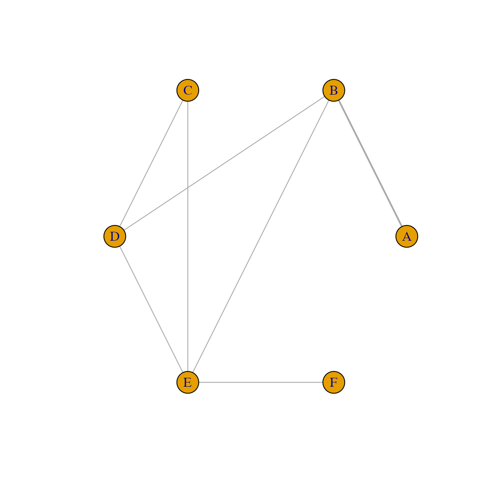
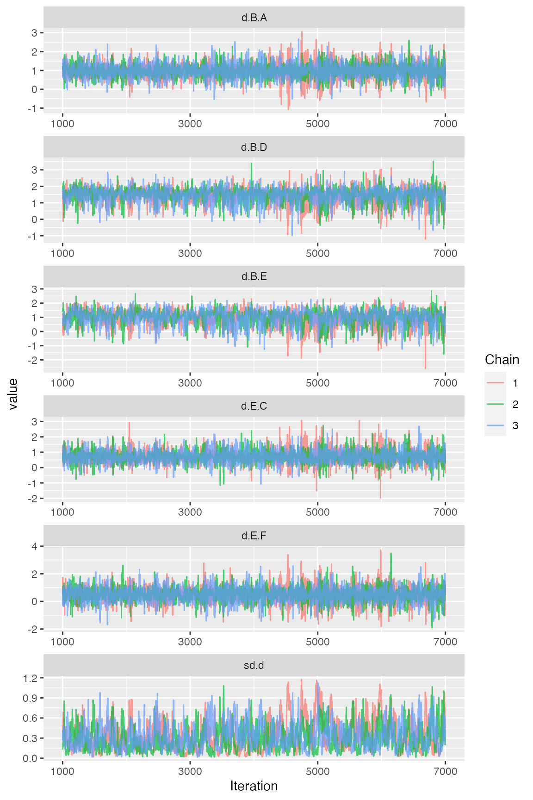
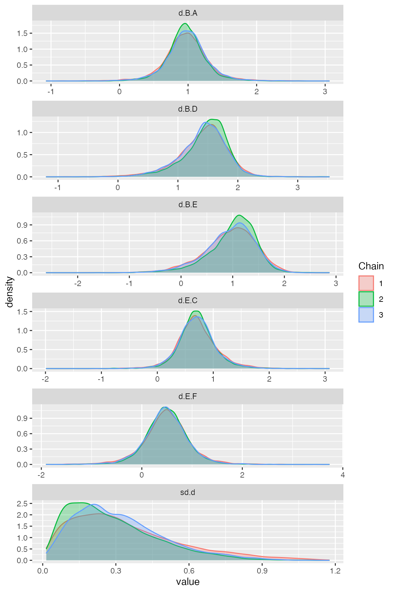
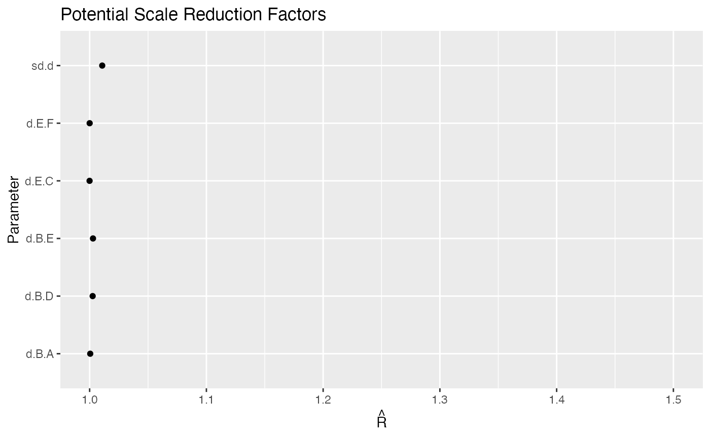
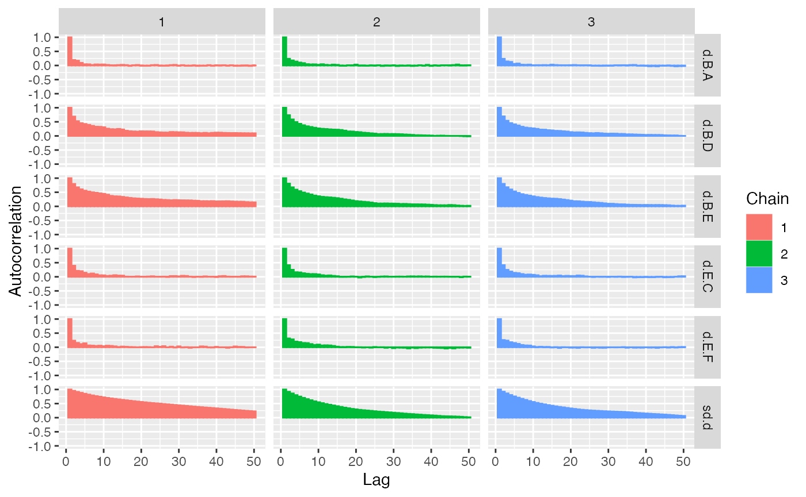
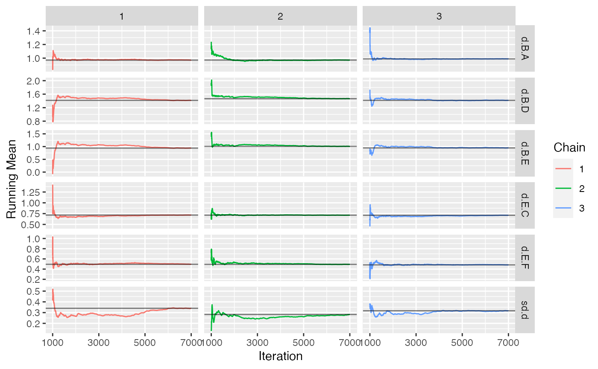
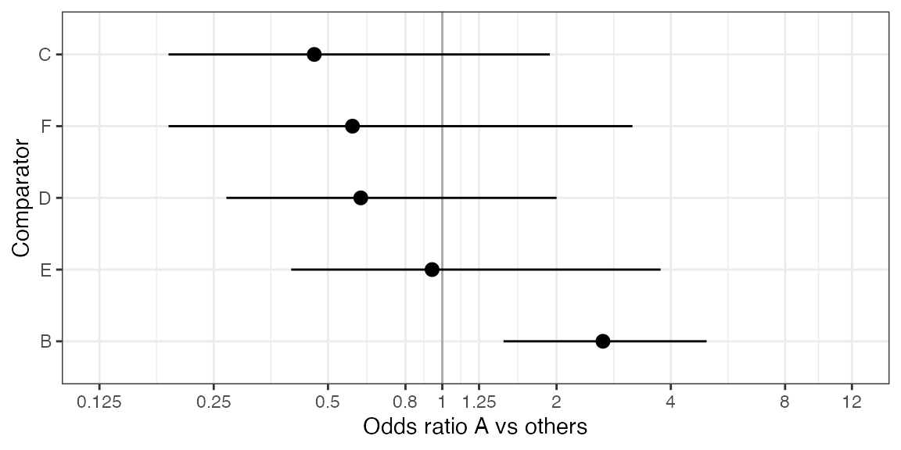
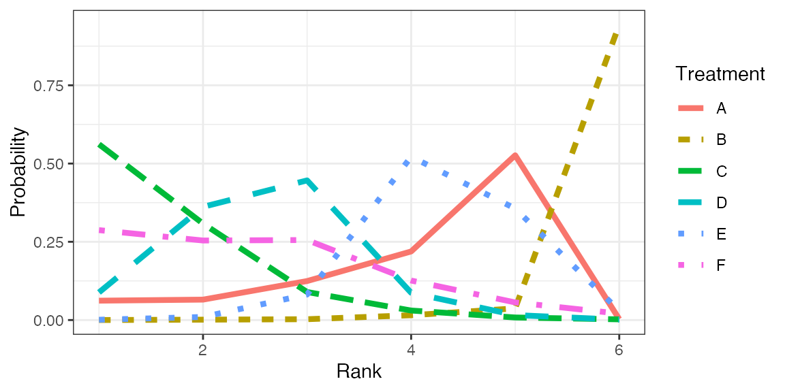
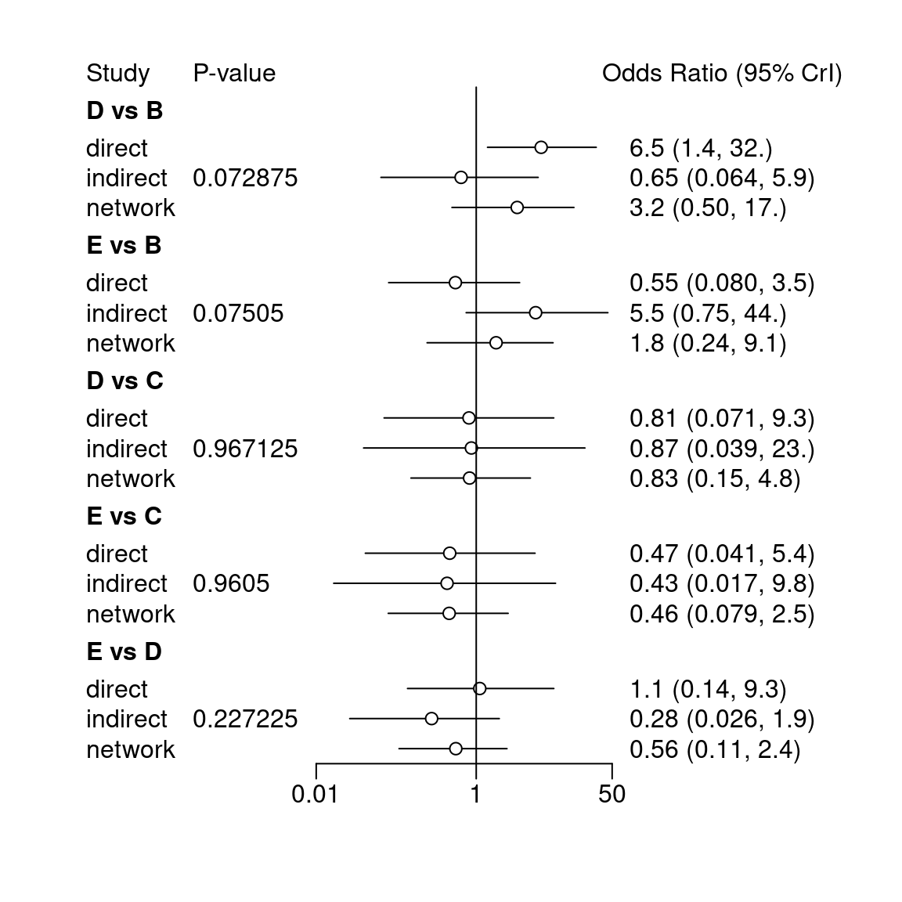
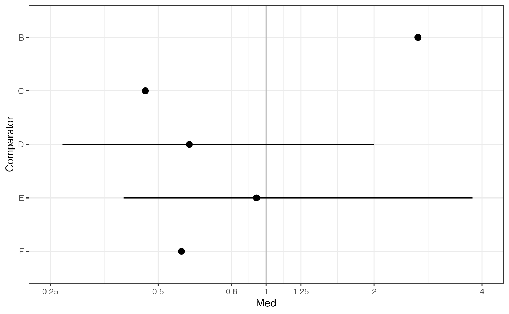

example-nma-binary-data.RmdThis vignette provides a short example of a Bayesian NMA for Binary data. The model fit relies on the gemtc package, pre- and post-processing is done with gemtcPlus.
data("binary_data", package = "gemtcPlus") # This should be binary
model_plan <- plan_binary(bth.model = "RE", n.chain = 3, n.iter = 6000, thin = 1, n.adapt = 1000, link = "logit", bth.prior = mtc.hy.prior(type = "var", distr = "dlnorm",-4.18, 1 / 1.41 ^ 2) )
model_input <- nma_pre_proc(binary_data, plan = model_plan)
Figure Network plot
plot(model_input$fitting_data)

model <- nma_fit(model_input = model_input)
## Warning in rjags::jags.model(file.model, data = syntax[["data"]], inits =
## syntax[["inits"]], : Unused variable "om.scale" in data## Compiling model graph
## Resolving undeclared variables
## Allocating nodes
## Graph information:
## Observed stochastic nodes: 16
## Unobserved stochastic nodes: 22
## Total graph size: 400
##
## Initializing modelThe ggmcmc package provides ggplot2 versions of all major convergence plots and diagnostics.
Figure Traceplot
ggs_traceplot(ggs(model$samples))

Figure Densityplot
ggs_density(ggs(model$samples))

Many more diagnostic plots are available, such as Brooks-Gelman-Rubin convergence diagnostic (Rhat), auto-correlation plot, or running means.

ggs_autocorrelation(ggs(model$samples))

ggs_running(ggs(model$samples))

The contrasts in this model are log-odds ratios.
Unfortunately, gemtc does not provide an estimate of the effective sample size (n.eff). Instead, a time-series SE is given. As a rule of thumb, the length of the MCMC is sufficient if the time-series SE is smaller than 2%(-5%) of the posterior SD.
summary(model)
##
## Results on the Log Odds Ratio scale
##
## Iterations = 1001:7000
## Thinning interval = 1
## Number of chains = 3
## Sample size per chain = 6000
##
## 1. Empirical mean and standard deviation for each variable,
## plus standard error of the mean:
##
## Mean SD Naive SE Time-series SE
## d.B.A 0.9773 0.2995 0.002232 0.003498
## d.B.D 1.4322 0.3948 0.002943 0.012389
## d.B.E 0.9654 0.4820 0.003592 0.019097
## d.E.C 0.7142 0.3439 0.002563 0.005321
## d.E.F 0.4904 0.4369 0.003257 0.006454
## sd.d 0.3134 0.1982 0.001477 0.009943
##
## 2. Quantiles for each variable:
##
## 2.5% 25% 50% 75% 97.5%
## d.B.A 0.37256 0.8096 0.9747 1.1418 1.6031
## d.B.D 0.50365 1.2225 1.4796 1.6877 2.0876
## d.B.E -0.14996 0.6977 1.0288 1.2942 1.7559
## d.E.C 0.05764 0.5108 0.6990 0.8975 1.4686
## d.E.F -0.39221 0.2435 0.4897 0.7429 1.3653
## sd.d 0.04960 0.1629 0.2747 0.4232 0.7962
##
## -- Model fit (residual deviance):
##
## Dbar pD DIC
## 21.72859 15.76110 37.48968
##
## 16 data points, ratio 1.358, I^2 = 31%To judge overall model fit, the residual deviance should be compared to the number of independent data points (which can be done via a small utility function in gemtcPlus).
get_mtc_sum(model)
## DIC pD resDev dataPoints
## 1 37.49 15.76 21.73 16Assume new treatment is “A” and is to be compared vs all other treatments.
Table Odds ratios treatment A vs other treatments
OR <- get_mtc_newVsAll(model, new.lab = "A", transform = "exp", digits = 2) OR
## Comparator Med CIlo CIup
## 1 B 2.65 1.45 4.97
## 2 C 0.46 0.19 1.92
## 3 D 0.61 0.27 2.00
## 4 E 0.94 0.40 3.76
## 5 F 0.58 0.19 3.17Table Probability A better than other treatments (better meaning larger OR)
get_mtc_probBetter(model, new.lab = "A", smaller.is.better = FALSE, sort.by = "effect")
## New Comparator probNewBetter
## 1 A B 0.996
## 4 A E 0.452
## 5 A F 0.208
## 3 A D 0.150
## 2 A C 0.103Figure Forest plot A vs other treatments
plot_mtc_forest(x = OR, lab = "Odds ratio A vs others", breaks = c(0.125, 0.25, 0.5, 0.8, 1, 1.25, 2, 4, 8, 12), sort.by = "effect")

Table Cross-tabulation of ORs
ctab <- round(exp(relative.effect.table(model)), 2) pander::pandoc.table(as.data.frame(ctab), split.tables = Inf)
| A | B | C | D | E | F | |
|---|---|---|---|---|---|---|
| A | A | 0.38 (0.2, 0.69) | 2.15 (0.52, 5.37) | 1.65 (0.5, 3.65) | 1.06 (0.27, 2.52) | 1.72 (0.32, 5.37) |
| B | 2.65 (1.45, 4.97) | B | 5.7 (1.71, 12.39) | 4.39 (1.65, 8.07) | 2.8 (0.86, 5.79) | 4.55 (0.95, 12.93) |
| C | 0.46 (0.19, 1.92) | 0.18 (0.08, 0.59) | C | 0.77 (0.42, 1.57) | 0.5 (0.23, 0.94) | 0.82 (0.24, 2.35) |
| D | 0.61 (0.27, 2) | 0.23 (0.12, 0.6) | 1.3 (0.64, 2.41) | D | 0.64 (0.3, 1.14) | 1.05 (0.31, 2.87) |
| E | 0.94 (0.4, 3.76) | 0.36 (0.17, 1.16) | 2.01 (1.06, 4.34) | 1.56 (0.88, 3.39) | E | 1.63 (0.68, 3.92) |
| F | 0.58 (0.19, 3.17) | 0.22 (0.08, 1.05) | 1.23 (0.42, 4.12) | 0.95 (0.35, 3.24) | 0.61 (0.26, 1.48) | F |
rk <- rank.probability(model, preferredDirection = 1) mrk <- reshape2::melt(rk[,], varnames = c("Treatment", "Rank"), value.name = "Probability") fig <- ggplot(data = mrk) + geom_line(aes(Rank, Probability, color = Treatment, linetype = Treatment), size = 1.5) + theme_bw()
Figure Rankogram
plot(fig)

Table Rank probabilities
## Rank probability; preferred direction = 1
## Rank 1 Rank 2 Rank 3 Rank 4 Rank 5 Rank 6
## A 6.188889e-02 0.065222222 0.124555556 0.21911111 0.526333333 0.002888889
## B 5.555556e-05 0.001166667 0.002666667 0.01533333 0.037222222 0.943555556
## C 5.616111e-01 0.308055556 0.089555556 0.03038889 0.008166667 0.002222222
## D 8.822222e-02 0.361611111 0.446111111 0.08711111 0.015777778 0.001166667
## E 9.444444e-04 0.009833333 0.081500000 0.52188889 0.356222222 0.029611111
## F 2.872778e-01 0.254111111 0.255611111 0.12616667 0.056277778 0.020555556nsplit <- mtc.nodesplit(model$model$network)
## Compiling model graph
## Resolving undeclared variables
## Allocating nodes
## Graph information:
## Observed stochastic nodes: 16
## Unobserved stochastic nodes: 23
## Total graph size: 509
##
## Initializing model
##
## Compiling model graph
## Resolving undeclared variables
## Allocating nodes
## Graph information:
## Observed stochastic nodes: 16
## Unobserved stochastic nodes: 23
## Total graph size: 510
##
## Initializing model
##
## Compiling model graph
## Resolving undeclared variables
## Allocating nodes
## Graph information:
## Observed stochastic nodes: 16
## Unobserved stochastic nodes: 23
## Total graph size: 509
##
## Initializing model
##
## Compiling model graph
## Resolving undeclared variables
## Allocating nodes
## Graph information:
## Observed stochastic nodes: 16
## Unobserved stochastic nodes: 23
## Total graph size: 509
##
## Initializing model
##
## Compiling model graph
## Resolving undeclared variables
## Allocating nodes
## Graph information:
## Observed stochastic nodes: 16
## Unobserved stochastic nodes: 23
## Total graph size: 509
##
## Initializing model
##
## Compiling model graph
## Resolving undeclared variables
## Allocating nodes
## Graph information:
## Observed stochastic nodes: 16
## Unobserved stochastic nodes: 22
## Total graph size: 397
##
## Initializing modelsummary(nsplit)
## Node-splitting analysis of inconsistency
## ========================================
##
## comparison p.value CrI
## 1 d.B.D 0.077600
## 2 -> direct 1.9 (0.30, 3.4)
## 3 -> indirect -0.43 (-2.7, 1.8)
## 4 -> network 1.2 (-0.70, 2.8)
## 5 d.B.E 0.072575
## 6 -> direct -0.61 (-2.5, 1.2)
## 7 -> indirect 1.7 (-0.29, 3.7)
## 8 -> network 0.58 (-1.4, 2.2)
## 9 d.C.D 0.960850
## 10 -> direct -0.21 (-2.7, 2.2)
## 11 -> indirect -0.13 (-3.3, 3.1)
## 12 -> network -0.20 (-1.9, 1.6)
## 13 d.C.E 0.962950
## 14 -> direct -0.76 (-3.2, 1.7)
## 15 -> indirect -0.83 (-4.1, 2.2)
## 16 -> network -0.79 (-2.5, 0.90)
## 17 d.D.E 0.232800
## 18 -> direct 0.095 (-2.0, 2.2)
## 19 -> indirect -1.3 (-3.6, 0.70)
## 20 -> network -0.59 (-2.2, 0.87)
HR_i <- get_mtc_newVsAll(model, new.lab = "A", transform = "exp", digits = 2) plot_mtc_forest(HR_i)
## Warning: Removed 3 rows containing missing values (geom_segment).
cat(model$code)
## R version 4.0.2 (2020-06-22)
## Platform: x86_64-apple-darwin17.0 (64-bit)
## Running under: macOS Catalina 10.15.6
##
## Matrix products: default
## BLAS: /Library/Frameworks/R.framework/Versions/4.0/Resources/lib/libRblas.dylib
## LAPACK: /Library/Frameworks/R.framework/Versions/4.0/Resources/lib/libRlapack.dylib
##
## locale:
## [1] en_US.UTF-8/en_US.UTF-8/en_US.UTF-8/C/en_US.UTF-8/en_US.UTF-8
##
## attached base packages:
## [1] stats graphics grDevices utils datasets methods base
##
## other attached packages:
## [1] ggmcmc_1.5.0 ggplot2_3.3.2 tidyr_1.1.2 gemtcPlus_1.0.0
## [5] R2jags_0.6-1 rjags_4-10 gemtc_0.8-7 coda_0.19-3
## [9] dplyr_1.0.2
##
## loaded via a namespace (and not attached):
## [1] Rcpp_1.0.5 lattice_0.20-41 assertthat_0.2.1 rprojroot_1.3-2
## [5] digest_0.6.25 truncnorm_1.0-8 slam_0.1-47 R6_2.4.1
## [9] plyr_1.8.6 backports_1.1.10 evaluate_0.14 pillar_1.4.6
## [13] rlang_0.4.7 rstudioapi_0.11 minqa_1.2.4 nloptr_1.2.2.2
## [17] Matrix_1.2-18 rmarkdown_2.3 pkgdown_1.6.1 labeling_0.3
## [21] desc_1.2.0 splines_4.0.2 lme4_1.1-23 statmod_1.4.34
## [25] pander_0.6.3 stringr_1.4.0 igraph_1.2.5 munsell_0.5.0
## [29] compiler_4.0.2 xfun_0.17 pkgconfig_2.0.3 systemfonts_0.3.1
## [33] Rglpk_0.6-4 htmltools_0.5.0 tidyselect_1.1.0 tibble_3.0.3
## [37] R2WinBUGS_2.1-21 reshape_0.8.8 crayon_1.3.4 withr_2.2.0
## [41] MASS_7.3-51.6 grid_4.0.2 nlme_3.1-148 meta_4.14-0
## [45] GGally_2.0.0 gtable_0.3.0 lifecycle_0.2.0 magrittr_1.5
## [49] metafor_2.4-0 scales_1.1.1 stringi_1.5.3 reshape2_1.4.4
## [53] farver_2.0.3 fs_1.5.0 xml2_1.3.2 ellipsis_0.3.1
## [57] ragg_0.3.1 generics_0.0.2 vctrs_0.3.4 boot_1.3-25
## [61] RColorBrewer_1.1-2 tools_4.0.2 forcats_0.5.0 CompQuadForm_1.4.3
## [65] glue_1.4.2 purrr_0.3.4 network_1.16.0 abind_1.4-5
## [69] parallel_4.0.2 yaml_2.2.1 colorspace_1.4-1 cpp11_0.2.1
## [73] memoise_1.1.0 knitr_1.29```